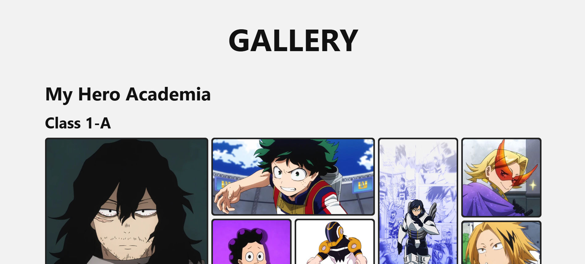

Personal gallery project
a.Gallery
A static photo gallery built to master the fundamentals of Bootstrap. It puts the grid system, responsive breakpoints, utility classes, and core components into practice, with a clean, desktop-first viewing experience for original photography, artwork, and visual collections.

Project overview
a.Gallery was built as a hands-on exercise in mastering the fundamentals of Bootstrap. Instead of reaching for custom CSS first, I used Bootstrap's grid, utility classes, and components to organize photos in a responsive grid with a full-size viewer, optimized for desktop with responsive support for smaller screens.
The site displays visual work in a tidy, engaging way while keeping maintenance and complexity low. It shows how well-understood front-end fundamentals can create a compelling browsing experience without relying on heavy frameworks.
Headline
A static gallery website built to master the fundamentals of Bootstrap.
Role
Front-end developer practicing Bootstrap's layout system, components, and utilities.
Tech stack
HTML, CSS, Bootstrap 5, and responsive design.
Design and experience
The site uses a clean, modern look that lets the images take center stage. Grid spacing, neutral colors, and consistent image framing keep the interface calm while the work stays in focus.
- Responsive image grid with even spacing and consistent sizing.
- Lightbox viewer for full-size images with next and previous controls.
- Category filters for quick access to specific collections.
- Visual consistency across desktop and mobile screens.
User experience
The gallery prioritizes easy browsing and clear presentation. It guides visitors from thumbnail to full-size view with minimal distractions.
Clear grid layout
Balanced spacing that makes every image easy to scan.
Easy filtering
Simple category buttons that keep the focus on the images.
Fast loading
Static architecture and lazy-loaded images keep pages quick.
Modern appeal
A polished presentation without unnecessary complexity.
Skills demonstrated
This project is a focused study of Bootstrap fundamentals. It shows how far the framework's grid, utilities, and components can go toward a polished, responsive page with minimal custom CSS.
Bootstrap fundamentals
- • Grid system (containers, rows, columns)
- • Responsive breakpoints
- • Utility classes for spacing, flex, and typography
- • Components such as cards and buttons